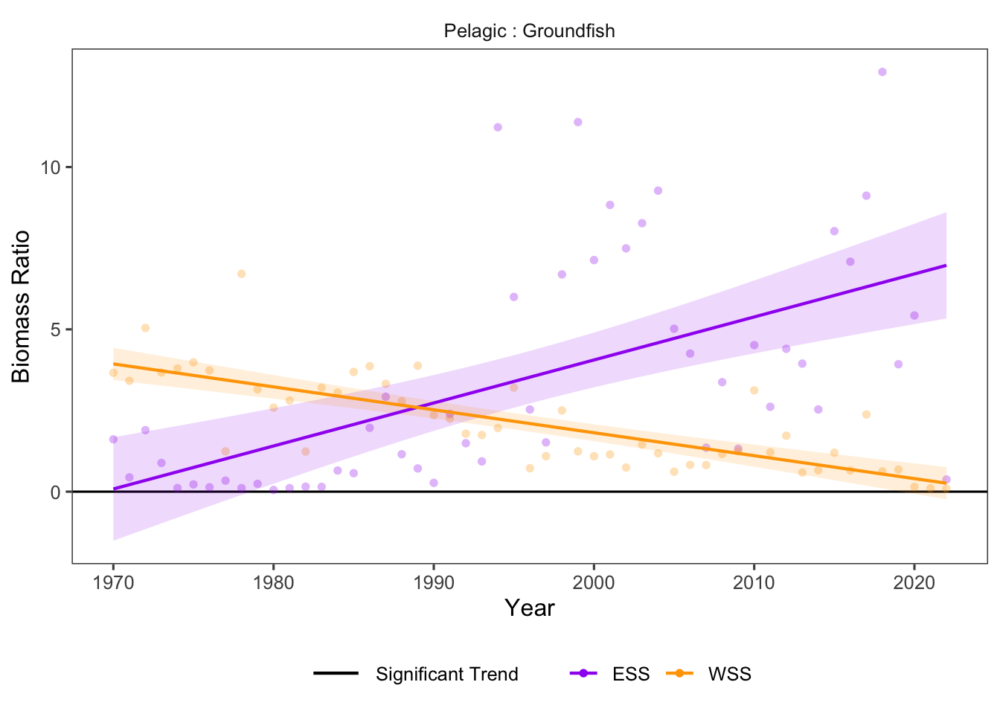

22 Structural Change
Data Type: Tabular Data (within eco_indicators)
Spatial Scope: Maritimes
Duration 1970-2022
Source: Bundy et al. 2017
22.1 Introduction to Indicator
The eco_indicators dataset provides indicators of Structural Change in the marine community (Bundy, Gomez, and Cook 2017).
- Biomass ratio of invertebrates to demersal fish
- Biomass ratio of pelagic to demersal fish
Biomass ratios between target groups indicate stuctural change occurring in the community, and can be linked to fishing impacts. Large changes in biomass ratios between functional groups can indicate community change or even regime shifts towards communities dominated by different kinds of species.
22.2 View Data
library(tidyr)
library(plotly)
library(stringr)
plotly_df <- data@data %>% inner_join(global_cols3)
# function to create plot with dropdown menu ------------------------------
make_structuralChange_dropdown_plot <- function(df,
year_col = "year",
region_col = "region",
value_suffix = "_value") {
# convert to long format
long <- df %>%
janitor::clean_names() %>%
pivot_longer(
cols = ends_with(value_suffix),
names_to = "metric",
values_to = "value"
) %>%
# remove suffix
mutate(
metric = str_remove(metric, "_value")
) %>%
# drop NAs (some regions don't have data for some variables or years)
tidyr::drop_na(value)
# find all metrics and regions
metrics <- unique(long$metric)
regions <- unique(long[[region_col]])
# assign regions to consistent colors
# region_colors <- setNames(hcl.colors(length(regions), palette = "Dark 3"), regions)
# clean names for dropdown panels, helper
pretty_label <- function(x) str_to_title(gsub("_", " ", x)) %>% str_replace(" "," : ")
# build plot -----------------
p <- plot_ly()
# Add bar traces: metric1 has region1..K, metric2 has region1..K, ...
for (metric_i in seq_along(metrics)) {
m <- metrics[metric_i]
for (region_i in regions) {
dat <- long %>%
filter(metric == m, .data[[region_col]] == region_i) %>%
group_by(.data[[year_col]],color, linetype, linewidth, region_group, region_group_label) %>% # in case you have multiple rows per year
summarise(value = sum(value), .groups = "drop") %>%
arrange(.data[[year_col]])
group_name <- unique(dat$region_group)
color <- unique(dat$color)
linetype <- unique(dat$linetype)
width <- unique(dat$linewidth)
# If a region truly has no data for that metric, add an empty trace
# (keeps trace indexing stable)
if (nrow(dat) == 0) {
dat <- tibble::tibble(!!year_col := integer(0), value = numeric(0))
}
p <- p %>% add_lines(
data = dat,
x = ~.data[[year_col]],
y = ~value,
name = as.character(region_i),
legendgroup = group_name,
legendgrouptitle = list(
text =
ifelse(region_i == "4VN" & group_name == "ESS",
"Eastern Scotian Shelf Zones",
ifelse(region_i == "4X",
"Western Scotian Shelf Zones",
NA))),
showlegend = (metric_i == 1),
visible = (metric_i == 1),
line = list(color = color, dash = linetype),
hovertemplate = paste0("<b>", region_i,":</b> ","%{y:.3f}<extra></extra>") )
}
}
n_regions <- length(regions)
n_traces <- length(metrics) * n_regions
buttons <- lapply(seq_along(metrics), function(metric_i) {
vis <- rep(FALSE, n_traces)
shl <- rep(FALSE, n_traces)
idx_start <- (metric_i - 1) * n_regions + 1
idx_end <- metric_i * n_regions
vis[idx_start:idx_end] <- TRUE
shl[idx_start:idx_end] <- TRUE
list(
method = "update",
args = list(
list(visible = vis, showlegend = shl),
list(
title = pretty_label(metrics[metric_i]),
yaxis = list(title = "Biomass Ratio")
)
),
label = pretty_label(metrics[metric_i])
)
})
p %>%
layout(
barmode = "stack",
hovermode = "x unified",
title = pretty_label(metrics[1]),
xaxis = list(title = str_to_title(year_col)), # keep one bar per year
yaxis = list(title = "Biomass Ratio", fixedrange = TRUE),
legend = list(
title = list(text = str_to_title(region_col)),
x = 1.02, xanchor = "left",
y = 1, yanchor = "top",
groupclick = "toggleitem"
),
updatemenus = list(list(
type = "dropdown",
x = -.1, xanchor = "left",
y = 1.15, yanchor = "top",
buttons = buttons
)),
margin = list(r = 180, t = 80)
)
}
# usage:
p <- make_structuralChange_dropdown_plot(plotly_df)
p <- p %>% config(displayModeBar= F)
pFigure 22.1: Structural Change Indicators in all NAFO regions and Scotian Shelf regions overall. Use dropdown menu to select indicator, and click legend to isolate regions.
22.3 Trends
Within NAFO zones and Scotian Shelf regions, the Pelagic Fish to Groundfish ratio varied widely, from 25 at its highest point to near zero. The Invertebrates to Groundfish ratio was much lower, never exceeding 1:1 throughout the time series (Fig. 22.1).
In the Scotian Shelf regions overall (ESS, WSS), the community shifted towards pelagic fish across the time series in the Eastern Scotian Shelf, and shifted towards groundfish in the Western Scotian Shelf. Data for Invertebrate:Groundfish ratio was not available at the Scotian Shelf Region scale (Fig. 22.2)

Figure 22.2: Top of the Food Web trends for ESS and WSS
22.3.1 Summary Table by NAFO Region and Structural Change Variable
Trends of each Structural Change indicators for each NAFO region within the Eastern and Western Scotian Shelf (1970-2022) are shown below (Table 22.1).
| variable | Eastern Scotian Shelf Trends | Western Scotian Shelf Trends |
|---|---|---|
| Invertebrates:Groundfish |
4VN: 5.40e-03 ∗ 4VS: 6.56e-03 ∗ 4W: 5.28e-03 ∗ |
4X: 1.92e-03 ∗ |
| Pelagic:Groundfish |
4VN: 2.19e-02 4VS: 1.32e-01 ∗ 4W: 1.25e-01 ∗ |
4X: -7.07e-02 ∗ |
22.4 Relevance to Research and Stock Assessments
Shifts in ecosystem structure over time represent changes of state or regime shifts in the marine community. In the Scotian Shelf, regime shifts have been documented and described as shifts away from a community of large-bodied demersal fish and towards a community dominated by benthic invertebrates and pelagic fish as a result of oceanic factors, climate change, and harvesting activities (Choi et al. 2005). However, empiciral data show that the shifts in structure in the Scotian Shelf system have differed across regions (Table 22.1).
22.5 Variable Definitions
| variable | description | unit |
|---|---|---|
| year | Year of trawl survey | |
| region | Region over which values are summarized | |
| INVERTEBRATES_GROUNDFISH_value | Biomass ratio of invertebrates to groundfish | Ratio |
| PELAGIC_GROUNDFISH_value | Biomass ratio of pelagic fish to groundfish | Ratio |
22.6 Additional Data
Structural Change variables (within eco_indicators) contain data for 4VN, 4VS, 4W, 4X, ESS, and WSS. All are shown on this page, but note that NAFO zones are nested within Scotian Shelf regions. Invertebrates:Groundfish ratios are not available at the Scotian Shelf region scale (ESS, WSS).